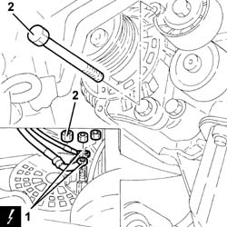
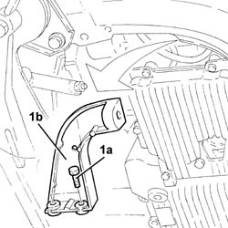
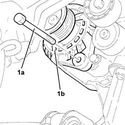
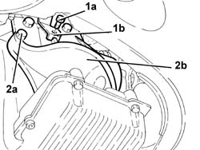
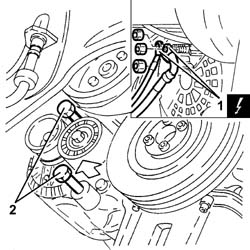
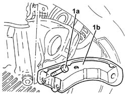
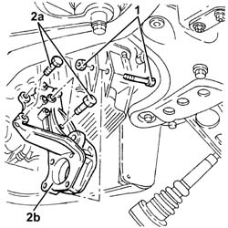
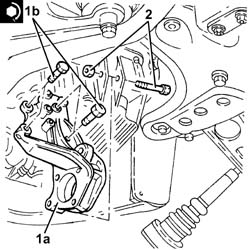

2710A32 intermediate drive shaft bearing support - r + r with intermediate drive shaft removed
- Path
- Procedures > 27 AXLE > 2710 FRONT AXLE > 2710A drive shafts and joints > 2710A32 intermediate drive shaft bearing support - r + r with intermediate drive shaft removed
- Kind
- repair procedure (removal / refitting; the operation number is the code)
- Applies to
- engines: 1.6 TS, 1.9 JTD 16V; all production periods
- Interactive page
- https://sloeber94.github.io/elrnDB-a147/en/#/3025186
Applies to: engines: 1.6 TS; all production periods
 Removing
Removing
 Refitting
RefittingProceed with removal 1092G10 single engine belt r r .
Proceed with removal 1072C44 exhaust manifold heat shield on bulkhead - r+r .
Applies to: engines: 1.6 TS; all production periods; only with equipment: 103 CV
Proceed with removal 1080B62 catalytic converter - r + r .
Applies to: engines: 1.6 TS; all production periods; only with equipment: 120 CV
Proceed with removal 1080B40 catalytic pre-converter - r r .
Applies to: engines: 1.6 TS; all production periods
1. Disconnect the electrical connections from the alternator.
 | Name | Connector |
|---|---|---|
1 | Alternator |
2. Undo the upper alternator fixing bolt.

Applies to: engines: 1.6 TS; all production periods
1. Undo the bolts (1a) and remove the alternator rear bracket (1b).

Applies to: engines: 1.6 TS; all production periods
1. Undo the alternator bottom bolt (1a), then move the alternator (1b) sideways and secure it as appropriate.

Applies to: engines: 1.6 TS; all production periods
Undo the bolt securing the intermediate drive shaft bearing mounting to the oil sump.
1. Undo the bolt (1a) and move the wiring mounting bracket (1b).
2. Undo the remaining bolts (2a) and remove the intermediate driveshaft bearing support (2b).

Applies to: engines: 1.6 TS; all production periods
Refitting
RemovingRefit the intermediate drive shaft bearing mounting in its seating and tighten the bolts to the specified torque.
 | Fastening | Component | Ø | Value (daNm) |
|---|---|---|---|---|
- | Bolt | FRONT DRIVE SHAFT BEARING MOUNT | M10 | (Support side) 7.0 |
Place the electrical wiring mounting bracket back in its housing and secure it using the bolt.
Tighten the bolt securing the intermediate drive shaft bearing mounting to the oil sump.
Refit the alternator in its seating and secure it temporarily with the bottom bolt.
Refit the alternator rear bracket in its seating and fix it using the bolts.
Tighten the bolts fixing the alternator to the recommended torque.
| Fastening | Component | Ø | Value (daNm) |
|---|---|---|---|---|
- | Bolt | ALTERNATOR ASSEMBLY | M10 | 5.0 |
Connect the electrical connections to the alternator.
Applies to: engines: 1.6 TS; all production periods; only with equipment: 120 CV
.Proceed with refitting 1080B40 catalytic pre-converter - r r .
Applies to: engines: 1.6 TS; all production periods; only with equipment: 103 CV
.Proceed with refitting 1080B62 catalytic converter - r + r .
Applies to: engines: 1.6 TS; all production periods
.Proceed with refitting 1072C44 exhaust manifold heat shield on bulkhead - r+r .
.Proceed with refitting 1092G10 single engine belt r r .
Applies to: engines: 1.9 JTD 16V; all production periods
Removing
RefittingProceed with removal 1016A10 sound-proofing cover - r + r .
Proceed with removal 1084A16 oil dip stick pipe - r r .
Proceed with removal 1092G10 single engine belt r r .
1. Disconnect the electrical connections from the alternator.
| Name | Connector |
|---|---|---|
1 | Alternator |
2. Undo the nuts for the bolts fastening the alternator and partly release the bolts from the alternator rear mounting and from the intermediate driveshaft bearing support.

Applies to: engines: 1.9 JTD 16V; all production periods
1. Undo bolts (1a) and remove the rear alternator mounting bracket (1b).

Applies to: engines: 1.9 JTD 16V; all production periods
1. Undo the bolt securing the intermediate drive shaft bearing mounting to the oil sump.
2. Undo the bolts (2a) and remove the intermediate driveshaft bearing support (2b).

Applies to: engines: 1.9 JTD 16V; all production periods
Refitting
Removing1. Refit the intermediate driveshaft bearing support (1a) and tighten the bolts (1b) to the recommended torque.
| Fastening | Component | Ø | Value (daNm) |
|---|---|---|---|---|
1b | Bolt | FRONT DRIVE SHAFT BEARING MOUNT | M10 | (Crankcase side) 4.5 ÷ 5.5 |
2. Tighten the bolt securing the intermediate drive shaft bearing mounting to the oil sump.

Applies to: engines: 1.9 JTD 16V; all production periods
Place the lower alternator mounting bracket back in its housing and fix it using the bolts.
Tighten the bolts fixing the alternator to the recommended torque.
| Fastening | Component | Ø | Value (daNm) |
|---|---|---|---|---|
- | Bolt | ALTERNATOR ASSEMBLY | M10 | 4.5 ÷ 5.5 |
| Fastening | Component | Ø | Value (daNm) |
|---|---|---|---|---|
- | Bolt | ALTERNATOR ASSEMBLY | M12 | 6.3 ÷ 7.7 |
Connect the electrical connections to the alternator.
.Proceed with refitting 1092G10 single engine belt r r .
.Proceed with refitting 1084A16 oil dip stick pipe - r r .
.Proceed with refitting 1016A10 sound-proofing cover - r + r .
Topics linked from this page (7)
- 1016A10 sound-proofing cover - r + r
- 1072C44 exhaust manifold heat shield on bulkhead - r+r
- 1080B40 catalytic pre-converter - r r
- 1080B62 catalytic converter - r + r
- 1084A16 oil dip stick pipe - r r
- 1092G10 single engine belt r r
- A10 Alternator